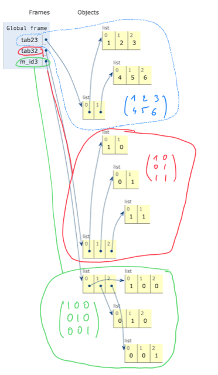
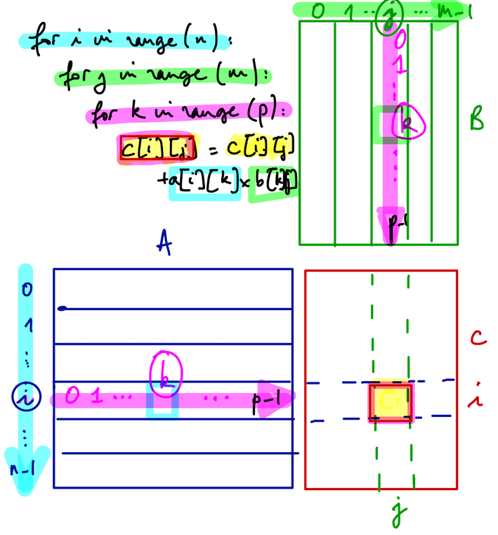

Boucles, tableaux et fonctions
Contenu
2. Boucles, tableaux et fonctions¶
Mis à jour : Mar 30, 2022, lecture : 20 minutes minimum, PhL.
Dans ce chapitre, nous revisitons trois notions déjà connues :
les structures de données de type tableau,
les structures de contrôle de répétition (les boucles) et
les fonctions,
avec des compléments algorithmiques sur:
les tableaux multidimensionnels,
les boucles imbriquées, indépendantes ou dépendantes, et
et de programmation sur :
la représentation de tableaux multidimensionnels en python,
la spécification des fonctions avec paramètre de type tableau.
2.1. Tableaux¶
2.1.1. Vocabulaire¶
Dimension.
Un tableau peut être unidimensionnel (un vecteur), bidimensionnel (une matrice), tridimensionnel (une image 2D en couleurs (R,G,B)), …
Sa dimension est donc le nombre d’indices nécessaires pour localiser une de ses valeurs.
Taille.
Chacune des dimensions d’un tableau est composée d’un certain nombre de valeurs de l’indice de cette dimension.
La taille de ce tableau est l’ensemble ordonné de chacun de ces nombres pour chacune de ses dimensions.
Exemples et conventions.
Le vecteur \((2, 4, 6)\) est de dimension 1 et de taille 3.
La matrice
est de dimension 2 et de taille (2, 3) : elle contient 6 valeurs organisées en 2 lignes et 3 colonnes.
La première valeur de sa taille est son nombre de lignes.
La seconde valeur de sa taille correspond à son nombre de colonnes.
Ce choix ligne, puis colonne, (puis …) est arbitraire mais usuel en maths, en algo, …
Le vecteur colonne
représente souvent le premier vecteur de la base orthonormée \((i, j, k)\) de \(\mathbb{R}^ 3\) est de taille (3, 1).
Excepté le terme tableau, ces notions sont indépendantes de tout choix informatique.
2.1.2. Tableaux en python¶
Il y a différentes façons de représenter et manipuler des tableaux en python. Les deux principales sont :
les listes (type natif
list) comme au semestre 1,les
ndarrayfournis par la bibliothèquenumpyet qui font l’objet d’un chapitre à venir.
Tableaux vs. listes
En général, un tableau est une structure de dimension et de taille connue et fixée de façon invariable une fois pour toute, et composé de valeurs de même type. Ces deux points techniques (taille fixée et unicité du type de ses valeurs) seront expliqués plus tard.
En algorithmique et en python, une liste est une structure de données dynamique (sa taille peut varier au fur et à mesure de son existence) de valeurs de type quelconque.
Note
Dans la continuité du semestre 1, nous continuons avec des tableaux représentés avec des listes. Cependant nous nous forcerons à distinguer cette représentation avec des liste(s)_ de la notion générale de “liste”.
2.1.3. Tableaux multidimensionnels représentés avec des listes¶
Un tableau 2D peut-être défini en python par une liste de listes. Dans ce cas, une matrice n’est pas exactement un bloc de valeurs, de forme rectangulaire ou carrée, mais une liste de lignes, chacune accessible comme une tableau 1D : chaque ligne est représentée par la liste des ses valeurs.
Dans les 2 cas, il faut bien 2 indices [ligne][colonne] pour accéder à chaque valeur d’un tel tableau 2D.
On rappelle que la convention de numérotation des indices des listes python commencent à 0, et se finit à len(liste)-1.
Exemple.
tab = [[1, 2, 3], [4, 5, 6]]
print(tab[0][2])
3
Exercice.
Quel indice utiliser pour accéder à la valeur
5danstab?
La représentation des trois tableaux 2D :
tab23 = [[1, 2, 3], [4, 5, 6]]
tab32 = [[1, 0], [0, 1], [1, 1]]
m_id3 = [ [1, 0, 0], [0, 1, 0], [0, 0, 1]]
est illustrée par pythontutor comme :

Remarque.
On a une représentation par liste de lignes. On aurait tout aussi pu représenter ce tableau 2D comme une liste de colonnes. Algorithmiquement, dans l’un ou l’autre de ces choix, un tableau donné aura les mêmes valeurs désignées par les mêmes indices : (numéro de ligne, numéro de colonne). En revanche, nous verrons que le stockage en mémoire de l’un ou l’autre de ces choix est différent – ce qui sera source de problèmes car ce choix varie selon les langages de programmation.
2.1.4. Pas de [ ]* pour définir une liste multidimensionnelle¶
Comment définir un tableau multidimensionnel représenté avec une liste de listes de … ?
Ce qu’il ne faut pas faire : on pourrait être tenté d’écrire :
c = [[0] * n] * n
Cette construction utilise le sens particulier du symbole * appliqué à des listes 1D qui correspond à la répétition de concaténation de listes.
La concaténation de deux listes peut s’écrire en python avec le symbole +.
l1 = [3]
l2 = [4, 5]
l = l1 + l2
print("l=", l)
l3_zeros = [0] * 3
print(l3_zeros)
l3_uns = [1] * 3
print(l3_uns)
l3 = l3_zeros + l3_uns
print("l3=", l3)
l= [3, 4, 5]
[0, 0, 0]
[1, 1, 1]
l3= [0, 0, 0, 1, 1, 1]
Avant d’indiquer pourquoi il ne faut pas utiliser aveuglement cette définition par concaténation, présentons :
Ce qu’il faut faire
Pour définir et initialiser un tableau mono- ou multi-dimensionnel, utiliser systématiquement la construction d’une liste par compréhension.
c = [[0 for i in range(n)] for j in range(n)]
(\(\star\)) Pourquoi ?
Le code suivant à éviter reprend la construction d’une liste 1D par concaténation et le fait qu’un tableau 2D est une liste de listes.
# à ne pas faire
l34_zeros = [[0] * 3] * 4
print(l34_zeros)
# à ne pas faire
l34_uns = [l3_uns] * 4
print(l34_uns)
[[0, 0, 0], [0, 0, 0], [0, 0, 0], [0, 0, 0]]
[[1, 1, 1], [1, 1, 1], [1, 1, 1], [1, 1, 1]]
L’affichage et des tests trop naïfs ne permettent pas d’exhiber pourquoi cette construction est dangereuse.
# definition de liste 2D en compréhension
oui_comme_ca = [[0 for i in range(3)] for j in range(4)]
print(oui_comme_ca)
print(oui_comme_ca == l34_zeros)
[[0, 0, 0], [0, 0, 0], [0, 0, 0], [0, 0, 0]]
True
Il y a pourtant danger :
l34_zeros[1][2] = 1 # je modifie UNE valeur de ce tableau
print(l34_zeros)
print("Aie ! ")
[[0, 0, 1], [0, 0, 1], [0, 0, 1], [0, 0, 1]]
Aie !
Danger
Quatre termes de la matrice ont été modifiées alors l’écriture désigne un seul terme de cette matrice.
Ce comportement assez piégeux peut être particulièrement long à identifier lors d’une phase de debug …
Visualiser pour bien comprendre.
Merci pythontutor !
tableau 1D : OK par concaténation et compréhension.
tableau 2D : Oui par compréhension, NON par concaténation de listes !
Conclusion Il vaut mieux s’interdire toute mauvaise habitude – même pour les listes 1D ou tableaux 1D.
Important
Utiliser la définition de listes en compréhension :
1D : OUI à
[i for i in range(3)]2D : OUI à
[[0 for i in range(3)] for j in range(5)]
Ne pas utiliser le symbole * de concaténation répétée pour créer et initialiser une liste.
~~
[[0] * 3] * 5~~
2.2. Spécifications de fonctions avec paramètre List en python¶
La spécification d’une fonction doit comporter le type de ses paramètres formels.
On s’était limité aux paramètres formels de types scalaires bool, int, float, complex.
Pourquoi introduire cette notion maintenant ?
la fonction est la construction élémentaire pour regrouper un traitement éventuellement complexe qui dépend de paramètres (d’entrée)
la vérification de la correction d’un traitement (à l’aide de tests unitaires) est facile à mettre en oeuvre lorsqu’il est défini sous la forme d’une fonction
il suffit d’appeler la fonction pour des paramètres bien choisis – c-a-d. pour lesquels le traitements attendu est connu.
une fonction doit être décrite par sa spécification (son en-tête, sa signature)
Nous allons écrire des traitements un peu complexes sur des tableaux. Donc nous avons besoin de fonctions qui manipulent des tableaux, et donc de leur spécification.
2.2.1. Comment indiquer le type d’un paramètre formel d’une fonction lorsque celui-ci est une liste ?¶
Deux approches sont possibles.
Il est possible d’utiliser le type prédéfini
listde façon similaire aux autres types scalaires de python. Hélas cette solution ne permet pas d’expliciter le type des valeurs contenues par la liste. Rappelons qu’une liste python, à la différence d’un tableau, peut contenir des valeurs de type quelconque.La solution que nous retiendrons pour les tableaux représentés avec des listes s’appuie sur type
List(avec un L majuscule) importé du moduletyping. Cette solution nous permettra d’expliciter les deux spécificités d’un tableau : l’unicité du type des valeurs qu’il contient et sa dimension fixée une fois pour toute.
from typing import List
Noter le L majuscule de List obligatoire avec le module typing avant python3.9)
Le type d’un tableau (représenté par une liste) sera décrit avec la syntaxe List[type_val] où type_val est le type des valeurs du tableau.
Exemples.
List[int]: un tableau 1D d’entiersList[float]: un tableau 1D de flottantsList[str]: un tableau 1D de caractères ou de chaîne de caractères.List[List[int]]: un tableau 2D d’entiers représenté par une liste de listes
Cette syntaxe permet d’expliciter le type (unique) des valeurs contenues dans un tableau.
Important
Evolutions des annotations de typage
python \(\ge\) 3.9 : module
typingplus nécessaire pour définirList[...]python \(\ge\) 3.9 : possibilité d’utiliser le type
list[...]sans majusculepython \(\ge\) 3.10 : le symbole
|pour désigner l’union de types (exUnion)
Note
La suite de ce chapitre utilise les possibilités de python 3.9.
Le paragraphe suivant indique comment préciser la taille (fixe) d’un tableau.
2.2.2. Comment spécifier une fonction avec des paramètres formels de type tableau ?¶
Pour chaque paramètre formel de type tableau (représenté par une liste python), on complète la spécification de la fonction avec autant de paramètres nécessaires à la définition de la dimension du tableau : un paramètre supplémentaire pour un tableau 1D, deux pour un tableau 2D, …
Exemple :
la fonction min1 doit retourner la valeur minimale d’un tableau 1 D t, d’entiers (par exemple) et de taille n quelconque.
La spécification de cette fonction s’écrira :
def min1(t: list[int], n: int) -> int:
'''retourne la valeur minimale du tableau d'entiers t de taille n'''
La taille
nest définie ici comme second paramètre de cette fonction.C’est bien un entier
Ce paramètre supplémentaire n’est pas nécessaire en python mais il est obligatoire dans cet enseignement
Nous étendons cette pratique aux tableaux multidimensionnels.
Par exemple, la spécification de la fonction qui identifie et retourne la valeur minimale dans un tableau 2D s’écrit par exemple (pour un tableau 2D d’entiers) :
def min2(t: list[list[int]], n: int, m: int) -> int:
'''retourne la valeur minimale du tableau 2D d'entiers t de taille n x m'''
Remarquons :
l’annotation du type de
t, paramètre formel de “type tableau 2D”, comme une liste de listes d’entiers,et les 2 paramètres de taille
netm, qui désignent respectivement le nombre de lignes et de colonnes det.
Lorsqu’une fonction admet un paramètre formel de type tableau (ou plus d’un), on convient que les paramètres de taille de chaque paramètre tableau suivent sa définition dans la spécification de la fonction.
Exemples.
si il y a 1 paramètre tableau 1D, on écrit dans l’ordre les types de
tab1, taille_de_tab1si il y a 2 paramètres tableaux 1D, on écrit dans l’ordre les types de
tab1, taille_de_tab1, tab2, taille_de_tab2si il y a 1 paramètre tableau 2D, on écrit dans l’ordre les types de
tab1, nb_lignes_de_tab1, nb_colonnes_de_tab1,…
2.2.3. (\(\star\star\)) Quelle spécification pour une fonction générique ?¶
Objectif 20 : compléments.
Sauter cette section en première lecture.
Généricité¶
Cette section s’est d’abord appelée :
“Comment spécifier un traitement générique ?”
Commençons par expliquer cette formulation un peu plus compliquée que le titre actuel.
spécifier : écrire la spécification (d’une fonction)
spécifier un traitement : suppose que le traitement est réalisé par une fonction dont on doit écrire la spécification
un traitement générique, ou une fonction générique : un traitement qui s’applique de façon similaire à des valeurs de types différents.
Exemple :
les corps des fonctions qui retournent le min de deux entiers ou deux flottants, sont identiques. OK ?
en revanche leurs spécifications sont, jusqu’à présent, différentes :
def min_int(a : int, b: int) -> int: def min_float(a : float, b: float) -> float:
En python, on peut écrire une seule fonction mon_min() qui accepte indifféremment des paramètres entiers ou flottants.
Cette fonction mon_min() est générique.
Il est facile de l’écrire avec une seule fonction python mais sans indication de spécification – ce qui est mal :)
Union dans le module typing¶
Question. Comment écrire sa spécification sans perdre d’information par rapport aux deux spécifications ci-dessus ?
Réponse.
On a besoin d’un autre contenu du module typing: Union, qui a le sens de l’union d’ensembles en mathématique.
from typing import Union
Ainsi Union[int, str] permet de désigner toute valeur de type int ou de type str.
De façon similaire, on peut utiliser Union[int, float] pour spécifier notre fonction générique mon_min qui traite indifféremment des paramètres entiers ou flottants.
def mon_min(a : Union[int, float], b : Union[int, float]) -> Union[int, float]:
if a < b:
return a
else:
return b
res1 = mon_min(3, 2)
res2 = mon_min(3.0, 2.0)
res3 = mon_min(3.0, 2)
print(res1, res2, res3)
2 2.0 2
Syntaxe. Attention aux [ ] –et non pas des ( )– dans l’annotation de types –comme pour List.
(\(\star\)) Attention.
Pourquoi je n’ai pas écrit que
Union[int, float]avait le sens l’union (mathématique) des ensembles d’entiers et de flottants ?Parce qu’en python (et plus généralement en informatique avec la notion de type ) :
Union[int, float] != float
On le vérifie :
print(Union[int, float] == float)
False
A lire¶
Sur les annotations de types : cet article (déjà mentionné plus haut) est l’un des plus intéressants que j’ai rencontré sur le web en préparant ce cours. En effet, la documentation de réference sur les annotations python est assez peu commode à exploiter dans ce cas.
2.3. Boucles imbriquées¶
2.3.1. Le contexte¶
Les boucles sont classiquement utilisées pour parcourir des tableaux de dimension quelconque.
Si le nombre de valeurs à parcourir dans tableau est connu alors la boucle for est la plus naturelle.
Un exemple est le parcours complet d’un tableau de taille connue.
Selon le traitement à effectuer, un ou plusieurs parcours d’un même tableau sont nécessaires.
Exemple 1.
Identifier la valeur minimale dans un tableau de dimension quelconque
nécessite de parcourir toutes ses valeurs une seule fois.
Selon sa dimension, ce parcours complet nécessite une ou plusieurs boucles imbriquées :
une boucle pour un tableau 1D,
mais 2 boucles imbriquées pour un tableau 2D :
pour parcourir successivement chaque ligne,
puis chaque colonne de chacune de ces lignes.
Ainsi, un seul parcours d’un tableau peut nécessiter plusieurs boucles imbriquées.
Exemple 2. On veut maintenant :
(Q) identifier si un tableau 1D contient au moins une valeur répétée ?
Remarquons que la réponse à cette question est un booléen.
Une telle valeur répétée s’appelle un doublon. Notre question s’écrit mathématiquement pour le tableau \(t\) :
(Q) Existe-t-il deux indices \(i\) et \(j\) avec \(i \neq j\) tels que \(t(i) = t(j)\) ?
Dans certains cas, il est nécessaire de parcourir plusieurs fois le tableau \(t\) (entièrement ou presque) pour pouvoir répondre (oui ou non) à cette question.
Par exemple pour
t1 = [1, 2, 3, 4, 5], mais aussi pourt2 = [1, 2, 3, 4, 4].
Exercice. Expliciter un exemple de tableau où la réponse peut être obtenue sans parcourir plusieurs fois la très grande partie de ses valeurs.
Quelle réponse : oui ? non ?
Quel exemple de tableau ?
Réponse
Le doublon du tableau
t_rapide = [1, 1, 2, 3, 4, 5]
est identifié au premier parcours de la droite vers la gauche, c-a-d. :
for i in range(len(t_rapide)):
Un algorithme correct, cad. un algorithme qui répond correctement à cette question pour n’importe quel tableau, devra donc pouvoir effectuer plusieurs parcours.
Pour ce traitement, les parcours du tableau ne sont pas identiques.
Ils sont même dépendants l’un de l’autre.
Et selon la question ils peuvent même être interrompus en cours de traitement.
Cette dépendance des parcours se traduit par l’imbrication de deux boucles dépendantes l’une de l’autre.
Pourquoi ces parcours sont dépendants l’un de l’autre ?
Quand le traitement peut-il être interrompu ?
Réponse
Il suffit de parcourir le sous-tableau à droite de la valeur dont on cherche un doublon
La recherche peut s’arrêter dès qu’un doublon a été identifié
Exercice. Modifier la question (Q) pour que son traitement demande alors que les parcours du tableau ne soient pas interrompus.
Réponse
Plusieurs solutions dont :
Combien de doublons sont présents dans le tableau
t?Quel est le plus petit doublon présent dans le tableau
t?Quel est le nombre d’occurrences maximale d’une valeur dans le tableau
t?…
On retiendra donc que certains traitements de tableaux 1D peuvent nécessiter plusieurs parcours de ce tableau. Et que ces parcours peuvent être mis en oeuvre avec plusieurs boucles imbriquées dépendantes.
Des exemples valent mieux que de longs discours. On commence avec des traitements où un seul parcours du tableau est nécessaire.
2.3.2. min1()¶
La fonction min1 qui retourne la valeur minimale d’un tableau 1 D d’entiers (par exemple) et de taille \(n\) quelconque.
def min1(t: list[int], n: int) -> int:
'''retourne la valeur minimale du tableau d'entiers t de taille n'''
val_min = t[0]
for i in range(1, n):
if t[i] < val_min:
val_min = t[i]
return val_min
#un appel de test sur un tableau de taille 3
u = [3, 1, 2]
un = min1(u, 3)
print(un)
1
Obligation pédagogique de définir le(s) paramètre(s) pour la taille d’un paramètre tableau.
python permet en effet de se dégager de cette obligation, entre autres grâce à la fonction prédéfinie len().
def min1_bis_moche(t: list[int]) -> int:
'''retourne la valeur minimale du tableau d'entiers t de taille n'''
val_min = t[0]
for i in range(1, len(t)):
if t[i] < val_min:
val_min = t[i]
return val_min
Ce qui n’empêche pas de se servir de len() dans l’appel. Et c’est ce qu’on fera en général.
u = [3, 1, 2]
print(min1(u, len(u)) == min1(u, 3))
True
Exercice.
Ecrire la spécification et le corps d’une fonction qui retourne la valeur minimale d’un tableau de
float.(\(\star\)) Qu’en pensez-vous ?
(\(\star\)) Quelles conditions satisfaire pour une généralisation (correcte) de ce traitement ?
La section de ce chapitre aborde cette question.
Réponse
Il suffit de remplacer l’indication de type
intparfloatdans l’en-tête et le corps des fonctions précédentes.En revanche en python, si on veut distinguer les 2 traitements, il faut que les fonctions aient des noms différents.
Le traitement (chercher le min de …) est identique dès qu’une relation d’ordre est définie pour le type des valeurs présentes dans le tableau.
2.3.3. min2()¶
Maintenant, déterminer la valeur minimale d’un tableau 2D illustre l’utilisation de deux boucles imbriquées indépendantes pour réaliser un seul parcours complet d’un tableau 2D.
def min2(t: list[list[int]], n: int, m: int) -> int:
'''retourne la valeur minimale du tableau 2D d'entiers t de taille n x m'''
val_min = t[0][0]
for i in range(0, n):
for j in range(0, m):
if t[i][j] < val_min:
val_min = t[i][j]
return val_min
# appel sur un tableau de taille 2 x 3
res = min2(tab, 2, 3)
print(tab, res)
[[1, 2, 3], [4, 5, 6]] 1
Exercice.
Dans
tab, remplacer la valeur6par une valeur négative et vérifier quemin2()retourne bien la valeur attendue.
Petite digression.
Remarquons aussi que la syntaxe de deux indices [ligne][colonne] est significativement différente d’une syntaxe “double indice” [ligne, colonne] plus habituelle en mathématiques.
On peut ainsi écrire le code suivant qui manipule chaque ligne de t comme un tableau 1D – pour lequel la fonction min1() a un sens. Se souvenir du schéma pythontutor du début de chapitre.
min_ligne_0 = min1(tab[0], 3)
min_ligne_1 = min1(tab[1], 3)
print(min2(tab, 2, 3) == min(min_ligne_0, min_ligne_1))
True
Manipuler les paramètres de taille avec les fonctions prédéfinis.
Dans le cas 1D, on a vu l’intérêt d’utiliser la fonction prédéfinie len() qui retourne la longueur d’un tableau-liste 1D.
Compte-tenu de la remarque précédente (tableau 2D représenté par liste de tableaux 1D), on peut utiliser cette fonction comme suit :
nb_lignes = len(tab)
nb_colonnes = len(tab[0])
print(nb_lignes, nb_colonnes)
# et donc dans l'appel
res = min2(tab, len(tab), len(tab[0]))
print(res)
2 3
1
Imbriquer 3, 4, … boucles ? Des traitements un petit peu plus complexes nécessitent d’imbriquer plus que deux boucles. Nous verrons un exemple classique de 3 boucles imbriquées avec le produit matriciel.
2.3.4. Comptons 1, 2, 3, …¶
Il est important de bien se représenter les répétitions “cachées” par l’écriture synthétique de boucles imbriquées.
Questions.
Combien de fois est exécuté le test de la ligne 5 de min2() :
pour
tab = [[1, 2, 3], [4, 5, 6]]?pour un
tquelconque ?
def min2(t: list[list[int]], n: int, m: int) -> int:
'''retourne la valeur minimale du tableau 2D d'entiers t de taille n x m'''
val_min = t[0][0]
for i in range(0, n):
for j in range(0, m):
if t[i][j] < val_min:
val_min = t[i][j]
return val_min
La fonction min2() possède deux boucles imbriquées indépendantes, cad. la boucle interne fait varier l’indice de colonne j pour des valeurs (d’indices) qui ne dépendent pas de la valeur de i, l’indice de ligne.
Réponses.
Respectivement 6 et \(m \times n\) fois.
Explications. Dans le cas général :
jprend successivement lesmvaleurs0, 1, ..., m-1pour n’importe quelle valeur de l’indiceide la boucle extérieure.Et cet indice
iprend aussi successivement lesnvaleurs0, 1, ..., n-1.Donc
m x ncouples de valeurs(i, j).
Remarque. Ne pourrait-on pas écrire une version plus “économique” de min2 ?
2.3.5. Imbriquons trois boucles !¶
Sauter cette section en première lecture.
Des traitements un petit peu plus complexes nécessitent d’imbriquer plus que deux boucles.
Un exemple classique est le calcul de la matrice \(C\) résultat du produit de deux matrices \(A\) et \(B\) : \(C = A \times B\).
Expliquons d’abord sans formule de maths, pourquoi on a besoin de 3 boucles imbriquées.
On simplifie le discours en prenant \(A\) et \(B\) deux matrices carrées de taille \((n, n)\).
On détaille les étapes de l’algorithme en identifiant les répétitions (boucles) et les traitements associés.
Rmq.
La description en français qui suit est parfois un peu difficile à suivre (désolé) – surtout quand on sait que l’algorithme décrit s’écrit en … 4 lignes !
Un premier guide de lecture est de distinguer la répétition du traitement à chaque itération de cette répétition, ie. : description de la boucle vs. le corps de boucle.
Le schéma suivant aide à comprendre ce traitement.
Allons-y.
On veut calculer toutes les valeurs de la matrice produit \(C\),
il faut donc parcourir toutes les lignes de \(C\),
une boucle 1 : pour chaque ligne, …
et pour chacune de ces lignes
traitement de la boucle 1 :
parcourir toutes les colonnes :
une boucle 2 : pour chaque colonne, …
cette boucle 2 est imbriquée dans la boucle 1
Pause 1.
Ces deux boucles imbriquées permettent de parcourir, une à une, toutes les valeurs de la matrice résultat \(C\).
Le traitement de la boucle 1 est “réduit” à “effectuer la boucle 2”.
Traitement de la boucle 2 ?
Traitement de la boucle 2 :
calculer chaque valeur de \(C\) d’une “façon coordonnée”.
Cette “façon coordonnée” consiste à prendre certains couples de valeurs et effectuer un certain calcul avec tous ces couples de valeurs
tous ces couples = une boucle 3
cette boucle 3 est imbriquée dans la boucle 2.
Pause 2.
Le traitement de la boucle 2 est “réduit” à “effectuer la boucle 3”.
Traitement de la boucle 3 ?
Traitement de la boucle 3 : un certain calcul avec tout un ensemble de couples de valeurs pour certains couples de valeurs
Ces couples de valeurs sont donnés par le choix d’une ligne de \(A\) et d’une colonne de \(B\),
Ce choix (ligne, colonne) est fixé par les boucles 1 (ligne) et 2 (colonne) précédentes ;
un parcours complet mais unique (la troisième dernière boucle) et simultané de cette ligne de \(A\) et cette colonne de \(B\) suffit pour effectuer le “certain calcul”.
ce certain calcul est une multiplication (des valeurs de \(A\) et \(B\) ainsi choisies) suivie d’une addition cumulative (dans la valeur de \(C\) aussi choisie).
le résultat de ce calcul est le résultat cherché : une certaine valeur de \(C\).
Pause 3.
Le traitement de la boucle 3 est donc réduit à ce calcul.
Conclusion. On a identifié :
3 boucles imbriquées les unes dans les autres,
et un seul traitement (qui n’est pas une boucle) : le calcul dans le corps de la dernière boucle.
Certains mots de ce pseudo-algorithme (pseudo car incomplet) en français permet d’identifier ce qui nous intéresse ici :
toutes = répétition = boucle
et pour chacune (de ces toutes) = répétition (boucle) imbriquée dans la boucle du toutes
certaines, un ensemble = choix qui utilise les indices des boucles
On a donc trois boucles imbriquées pour calculer toutes les valeurs de \(C\) :
une première boucle (extérieure) pour parcourir ses lignes,
cette boucle définit donc l’indice des lignes;
une deuxième boucle, imbriquée dans la précédente, pour parcourir ses colonnes,
cette boucle définit donc l’indice des colonnes;
une troisième boucle, imbriquée dans la précédente, pour le traitement “coordonné” (sur certaines valeurs de \(A\) et \(B\)).
cette boucle définit donc l’indice du parcours coordonné de la ligne et de la colonne.
Ce qui correspond à l’ecriture mathématique, à la fois explicite et synthétique :
où les trois indices indiquées précédemment sont, respectivement et comme sur le schéma plus haut :
\(i\) : ligne
\(j\) : colonne
\(k\) : parcours coordonné
et ils varient (ici) tous entre 0 et \(n-1\).
Le code suivant – pour des matrices entières et carrées de taille n par exemple – explicite donc ce traitement.
def prod_mat_carrees(a : list[list[int]], b : list[list[int]], n : int) -> list[list[int]]:
'''retourne C = AxB ou A,B,C sont des matrices entières carrees de taille nxn'''
c = [[0 for j in range(n)] for i in range(n)] # bien lire cette ligne
for i in range(n):
for j in range(n):
for k in range(n):
c[i][j] = c[i][j] + (a[i][k] * b[k][j])
return c
Rmq. Les 4 lignes annoncées pour l’algorithme sont les lignes 4-5-6-7 :) Les lignes supplémentaires sont propres à sa programmation.
Détails
l’en-tête et son
doc-stringl’initialisation de la matrice résultat
c(avec une construction en compréhension)le
returnde la fonction
Appliquons cette fonction pour n = 2.
m = [[1, 2], [3, 4]]
m_id = [[1, 0], [0, 1]] # matrice identité
res1 = prod_mat_carrees(m, m_id, 2)
#res2 = prod_mat_carrees(m_id, m, 2)
print(res1)
#print(res2)
[[1, 2], [3, 4]]
Remarques.
L’accumulation dans
c[i][j]de la ligne 7 nécessite l’initialisation à zéro de la matrice résultatc. La ligne 2 crée cette matricecet l’initialise à zéro avec une construction par compréhension. D’autres codages ou hypothèses sont possibles à ce sujet.Par souci de lisibilité, la spécification de cette fonction ne suit pas les règles indiquées plus haut pour la spécification de paramètre de type tableau. On aurait du écrire 6 paramètres d’entrée car il en faut 3 pour définir chaque matrice : son identifiant, son nombre de lignes, son nombres de colonnes. Ici, on a profité du caractère carré de toutes ces matrices pour uniquement spécifier ce nombre commun \(n\).
Exercices.
Que cache la ligne 3 de la fonction
prod_mat()?Proposer d’autres écritures de ce traitement.
Combien de fois est exécuté le calcul de la ligne 7 de
prod_mat():pour obtenir
res1?pour obtenir une matrice résultat
cquelconque ?
Justifier qu’on peut effectuer la première boucle en parcourant les colonnes (de
c) ? Comment ?(\(\star\)) Peut-on effectuer la première boucle avec la boucle sur
k? Expliquer.
Réponses.
Voir détails ci-dessus
\(n^3\) où \(n\) est la taille des matrices ici supposées carrées
(\(\star\)) les 3 boucles sont indépendantes et peuvent être effectuées dans un ordre quelconque. Avec une boucle extérieure sur
k, la valeur finale des éléments de la matrice résultat ne sera connue qu’à la dernière itération de cette boucle externe. Se convaincre que la triple boucle actuelle fourni une valeurs à chaque itération de la boucle surk(la plus interne).
2.4. Boucles imbriquées dépendantes¶
Il est classique de devoir utiliser des boucles imbriquées pour certains traitements de tableaux 1D. Nous verrons plusieurs fois le cas avec les algorithmes de tri.
2.4.1. Valeur répétée dans un tableau 1D¶
Revenons sur l’exemple de la recherche de valeurs en double dans un tableau 1D. On peut imaginer plusieurs variations autour de cette question :
existe-t-il au moins un doublon dans un tableau donné ?
expliciter une valeur présente au moins 2 fois dans un tableau donné
lister toutes les valeurs au moins en double dans un tableau donné
expliciter les indices d’une valeur en double dans un tableau donné
lister les indices des valeurs au moins en double dans un tableau donné
…
Exercice.
Qu’est ce qui différencie ces différentes variations autour de la notion de doublon ?
Cependant tous ces traitements nécessitent des boucles imbriquées.
Intéressons-nous au problème indiqué en début de chapitre :
(Q) Existe-t-il au moins un doublon dans un tableau donné ?
On rappelle qu’un doublon est une valeur répétée à deux endroits différents du tableau. Soit pour ce problème et un tableau \(t\) :
(Q) Existe-t-il 2 indices \(i\) et \(j\) tels que \(i \neq j\) et \(t[i] = t[j]\).
Exercice. Pour la question de l’existence d’un doublon, écrire un (pseudo-)algorithme en français qui (vous) aide à identifier les répétitions, les imbrications et les éventuelles contraintes sur les indices.
2.4.2. Une première solution avec deux boucles imbriquées indépendantes¶
def existe_doublon(t : list[int], n : int) -> bool:
res = False
for i in range(n):
for j in range(n):
if i != j and t[i] == t[j]:
res = True
return res
petit_tab = [i for i in range(4)]
tab1 = petit_tab + petit_tab # concatenation de listes
tab2 = [i for i in range(8)]
print(tab1, tab2)
oui = existe_doublon(tab1, 8)
non = existe_doublon(tab2, 8)
print(oui, non)
[0, 1, 2, 3, 0, 1, 2, 3] [0, 1, 2, 3, 4, 5, 6, 7]
True False
Comptons !
Combien de fois le test de la ligne 6 de la fonction
existe_doublon()est exécuté pour :
l’exemple avec
tab1? (outab2?)dans le cas général : pour un tableau
tquelconque ?
Qu’en pensez-vous ?
Souvenir, souvenir ! Pourquoi dit-on que l’opérateur
and(ou&&) est paresseux ? Quelles conséquences ici ?
Réponses.
\(n^2\)
La moitié au moins de ce travail est inutile.
Si \(i \neq j\), la comparaison
t[i] == t[j]n’est pas évaluée.
2.4.3. Une solution avec deux boucles imbriquées dépendantes¶
Dans l’exemple précédent, la boucle intérieure peut être limitée au sous-tableau des zones non encore explorées pour la valeur testée avec la boucle extérieure.
En l’occurrence, à l’itération i, il suffit d’explorer le sous-tableau droit à partir de l’indice i+1, cad. pour les indices i+1, i+2, ..., n-1.
Ainsi le test i != j est toujours satisfait donc inutile.
Voici donc la bonne solution avec deux boucles imbriquées dépendantes : l’indice de la boucle intérieure dépend de l’indice de la boucle extérieure.
def existe_doublon_2(t : list[int], n : int) -> bool:
res = False
for i in range(n):
for j in range(i+1, n):
if t[i] == t[j]:
res = True
return res
oui = existe_doublon_2(tab1, 8)
non = existe_doublon_2(tab2, 8)
print(oui, non)
True False
Exercice. Comptons !
Combien de fois le test de la ligne 6 de la fonction
existe_doublon_2()est exécuté pour :
l’exemple avec
tab1? (outab2?)dans le cas général : pour un tableau
tquelconque ?
Qu’en pensez-vous ?
Réponses.
\(n + (n-1) + \dots + 2 + 1 = n(n + 1)/2\) qui est équivalent à \(n^2/2\) quand \(n\) est arbitrairement grand – soit moitié moins que le traitement précédent.
On continue à “trop travailler” dans certains cas.
2.5. Autres imbrications de boucles¶
La boucle while ... : est l’autre structure de répétition disponible en python.
Il est bien sûr possible d’imbriquer, extérieurement et intérieurement, des boucles while.
Et aussi des combinaisons de boucles while et for.
L’exemple suivant illustre une telle construction.
t = [1, 2, 3, 1, 2, 3]
i = 0
while t[i] < t[i+1]:
for j in range(i+1):
print(i, j, ":", t[j])
i = i+1
print("*")
0 0 : 1
*
1 0 : 1
1 1 : 2
*
Remarque.
L’exemple précédent :
s’exécute comme attendu sur ce tableau
tmais n’est pas correct en général car aucun arrêt de la boucle
whilen’est prévu si le testt[i] < t[i+1]n’est jamais vérifié.
Exercice.
On continue avec l’existence de doublon dans un tableau 1D.
(\(\star\)) Proposez une autre version qui effectue au plus le même nombre de tests qu’
existe_doublon_2()?Expliciter des cas où le nombre de tests effectué n’est pas amélioré.
Expliciter des cas où le nombre de tests effectué est amélioré.
Expliciter des cas où le nombre de tests effectué est minimal.
Qu’en pensez-vous ?
Réponses.
Cherchez un peu svp ! Ensuite allez vérifier ici
2.6. Synthèse¶
2.6.1. Ce qui a été vu¶
Structure de données composée : les tableaux et leur représentation
les tableaux de dimension quelconque peuvent être représentés en python par des listes, des listes de listes, des listes de listes de listes …
Avec comme conséquences :
indices
[][]...[]définition-initialisation par compréhension :
[ ... [ 0 for i in range(5)] for j in range(3) ... ]
Structure de contrôle : boucles imbriquées
indépendantes vs. dépendantes
un parcours vs. plusieurs parcours vs. plusieurs parcours dépendants les uns des autres_
comprendre le déroulement de ces boucles pour compter le nombre de répétitions
Spécifier pour vérifier une fonction avec paramètre(s) de type tableau :
avant python 3.9 :
from typing import List# avec unLmajusculedepuis python 3.9 :
tab2D: [list[list[int]]# avec unlminusculeajouter les paramètres de dimension
appel avec la fonction préféfinie
len()
2.6.2. Ce qui n’a pas été vu¶
Les ndarray du module numpy sont très utilisés en pratique et présentés dans une annexe dédiée
2.6.3. Exercice de synthèse¶
Dans un notebook jupyter dédié, s’intéresser aux problèmes de l’égalité, de la similarité et de la comparaison de deux tableaux 1D.
Définitions
Deux tableaux sont égaux si ils contiennent les mêmes valeurs aux mêmes positions.
Deux tableaux sont similaires si ils contiennent les mêmes valeurs avec le même nombre d’occurrences – indépendamment de leurs positions.
Deux tableaux sont comparables si ils contiennent les mêmes valeurs si ils contiennent les mêmes valeurs avec le même nombre d’occurrences – indépendamment de leurs nombres d’occurrences et de leurs positions.
Réponse de l’exercice “Doublon avec boucle while”
def existe_doublon_while(t : list[int], n : int) -> bool:
res = False
i = 0
while i < n and res == False:
j = i + 1
while i != j and j < n:
if t[i] == t[j]:
res = True
j = j + 1
i = i + 1
return res
t_ameliore = [i%4 for i in range(8)]
oui = existe_doublon_while(t_ameliore, len(t_ameliore))
t_non_ameliore = [i for i in range(8)]
non = existe_doublon_while(t_non_ameliore, len(t_non_ameliore))
t_minimal = [1] + [i for i in range(1,8)]
oui2 = existe_doublon_while(t_minimal, len(t_minimal))
print(t_ameliore, "doublon :", oui)
print(t_non_ameliore, "doublon :", non)
print(t_minimal, "doublon :", oui2)
[0, 1, 2, 3, 0, 1, 2, 3] doublon : True
[0, 1, 2, 3, 4, 5, 6, 7] doublon : False
[1, 1, 2, 3, 4, 5, 6, 7] doublon : True